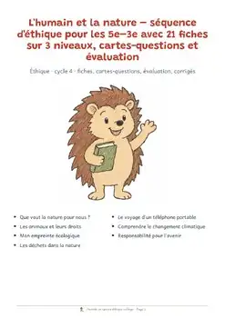
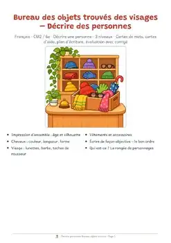
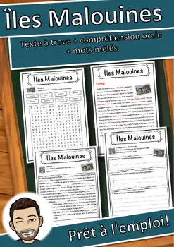
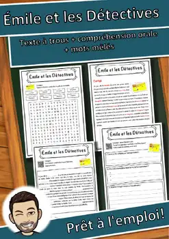
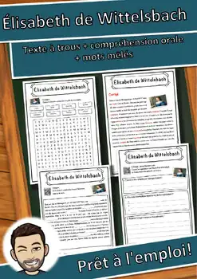
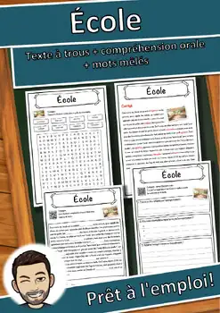
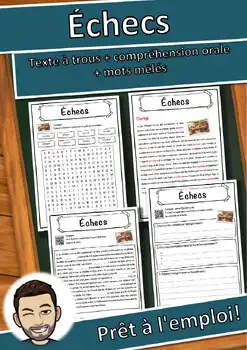
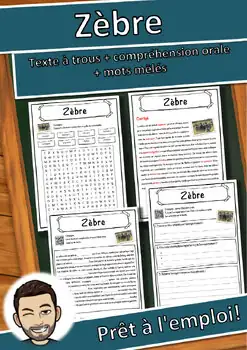

L'humain et la nature – séquence d'éthique 5e–3e : 21 fiches sur 3 niveaux
US$ 3.00Voir sur TpT
L'humain et la nature – séquence d'éthique pour les 5e–3e avec 21 fiches sur 3 niveaux, cartes-quest
L'humain et la nature – séquence d'éthique pour les 5e–3e avec 21 fiches sur 3 niveaux, cartes-questions et évaluation
37 pages.
- La séquence comprend sept thèmes. Chaque thème a un texte d'information, trois fiches (niveau 1 à 3) et six cartes-questions.
- Le niveau 1 consolide, le niveau 2 applique, le niveau 3 demande une discussion et un avis personnel.
- L'évaluation avec barème couvre toute la séquence.
- Tous les corrigés et remarques se trouvent dans la partie corrigés.
Remarque : textes et illustrations créés avec l'aide de l'IA et vérifiés par l'auteur.
⭐ Cette ressource vous a plu ? Laissez un petit avis sur TPT : vous gagnez des crédits TPT pour vos prochains achats et cela m’aide beaucoup ! Cliquez sur « Follow » dans ma boutique pour découvrir en premier les nouvelles ressources gratuites.
U.S. STANDARDS (alignment):
- CASEL Self-Awareness; CASEL Social Awareness; CASEL Relationship Skills; ACTFL World-Readiness Standards: Interpretive Communication; ACTFL Cultures (Relating Cultural Practices/Products to Perspectives); ACTFL Connections (Acquiring Information and Diverse Perspectives)
- Frameworks: CASEL SEL Framework; ACTFL World-Readiness Standards for Learning Languages
- Also supports the state standards of non-CCSS states, e.g. Texas TEKS (Languages Other Than English, §114); Florida World Languages Standards; Virginia World Language SOL; Indiana World Language Standards; Oklahoma World Languages Standards; Georgia GSE Modern Languages; Texas TEKS (Social Studies, §113); Florida NGSSS (Social Studies); Virginia History and Social Science SOL; Indiana Academic Standards for Social Studies; Oklahoma Academic Standards for Social Studies; Georgia GSE Social Studies; New York K-12 Social Studies Framework – and the CCSS-based standards of all other U.S. states (please check the exact local code).
ThèmeCulture générale
NiveauxGrades 5–7
Type de ressourceFiche de lecture
Pages37
FormatPDF
Ressources similaires

Décrire une personne : le bureau des objets trouvés, CM2–6e

Döbel – Fiche de lecture : texte à trous, compréhension orale et mots mêlés

Îles Malouines – Fiche de lecture : texte à trous et compréhension orale

Émile et les Détectives – Fiche texte à trous et compréhension orale

Élisabeth de Wittelsbach – Fiche texte à trous et compréhension orale

École – Fiche de lecture : texte à trous, compréhension orale et mots mêlés

Échecs – Fiche de lecture : texte à trous, compréhension orale et mots mêlés
